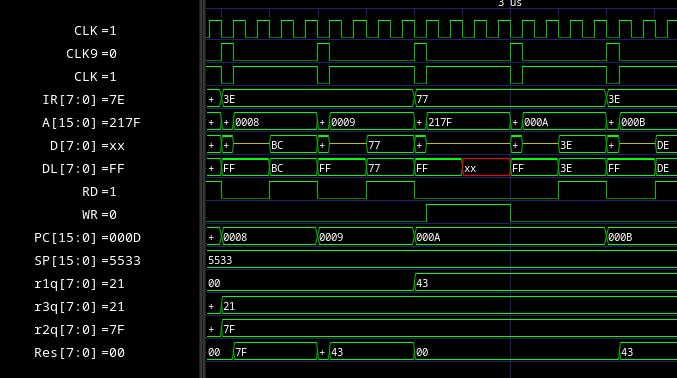
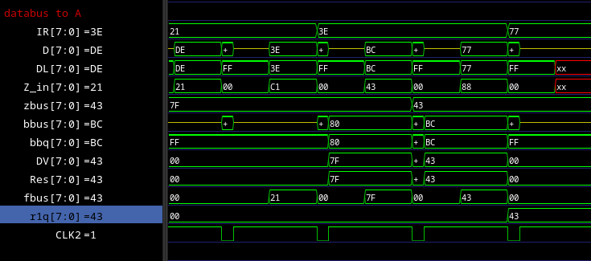
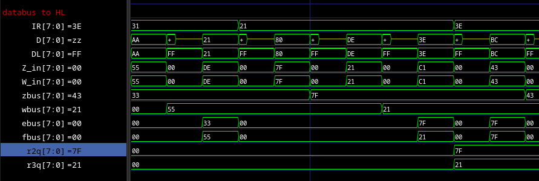
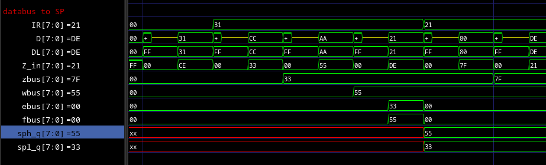
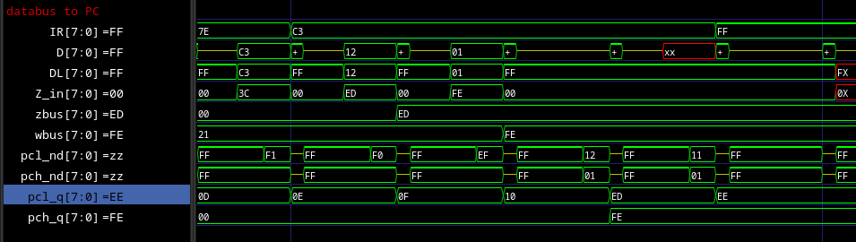

SM83 Core Investigations
This document was compiled by @Rodrigodd in the process of debugging SM83 Core HDL. The information is of historical interest and can serve as an example of how to search for bugs and debug HDL implementation.
JP a16 and LD SP, a16
JP 0003 is writing 0xFFFC to PC instead of 0x0003, which is its inverse. The flow of 0x0003 to PC is inverted a couple of times, and one of them may be wrong.
The flow is the following:
pcq (FFFC) <- pc_bnq (0003) <- pcnd (0003) <- wzreg_to_pc ? zbus/wbus (FFFC) : IDU (N/A)
I guess the flow between the "mux" and "pcq" is shared between the "IDU to PC" and this "ZREG to PC". And I guess that ZREG is shared with other instructions. So I am not sure where the problem is. I may need to test with other instructions first.
Testing with the instruction "LD SP, 0003", the same problem happens, 0xFFFC is load into SP. This make thing that the problem is in zbus, as it is only used in PC and SP, as far as I know.
Looking where zbus is first assigned, I found that all other bus are negations
of zbus or wbus. This make me think that zbus should naturally be inverted, and
the buses should directly connect to it.
Actually, all registers are inverted, so maybe zbus should be inverted in its entired, as from my analysis below.
LD (HL), A (after LD A, $BC LD HL, $ff80)
This should put A in the data bus, and HL in the address bus. But HL appear
inverted (since the previous LD HL, $ff80) in the address bus, and the databus
stays in high impedance.
Data bus stays in high impedance
DataLatch is the only one connected to the external data bus D. Although it
is called a "latch" it does not hold any data, it just forwards data from other
data buses; that is Res (the result of the ALU) and DL (the internal
databus).
But datalatch.md states that it can only output values to DL, and load from
either D or Res. But this should not be the case, because we need to output
to the external bus, and DataLatch is the only one connected to it.
Also, it specifies DL bus as inout, but never assign z to it. In fact,
during the write (WR high) DataBridge also writes to DL, making DL go
to invalid state x. Actually, a lot of things tries to write to DL.
(Strangely, DataBridge only writes 0 or z bits to DL. Maybe DL has a
pull-up somewhere? Oh, maybe that is what BusPrecharge does, not sure if
verilog will simulate that. Oh, this is handle by the use of BusKeeper.)
The value of register A is stored in ReqA/r1q, inverted. This value can be
put in the abus or bbus (and Aout, but just affect ALU logic), but during
write neither of them are used, \s2_op_alu8(w[3]) and`s3_oe_areg_to_rbus(x[35]`) are both 0.

In screenshot, the execution of the instruction LD (HL), A (77).
HL is inverted in the address bus
H and L are stored in ReqH/r3q and ReqL/r2q, respectively, inverted.
H can go to abus, bbus or dbus, and L can go to abus, bbus or
cbus. They go to the bus through an inverter, so they have they original
value.
In this instruction, H goes to dbus and L goes to cbus. dbus cbus go
through an BusKeeper, and them inverted again into the AdressBus (or A).
From the comments in IDU.v, the code expects that the internal register
actually holds the straight value of the ISA registers, but they are inverted in
the current form. This was also seen in the JP instruction, and I fix that
there by inverting the Zbus, but maybe we need to invert something more
fundamental, like the value read from the memory?
- H:
r3q->dbus->BusKeeper->AddressBus(inverted) - L:
r2q->cbus->BusKeeper->AddressBus(inverted)
Path from databus to register A
D->DataLatch->DL->Z_in(inverted) ->zbus->bbus(straighted) ->bbq->DV(inverted) ->Res->fbus->RegA
So RegA/r1q contains the inverted value of A.

Path from databus to register HL
- H:
D->DataLatch->DL->W_in(inverted) ->wbus->fbus->RegH - L:
D->DataLatch->DL->Z_in(inverted) ->zbus->ebus->RegL
So HL are also stored inverted in the registers.

Path from databus to register SP
- SP high:
D->DataLatch->DL->W_in(inverted) ->wbus->sph_nd(inverted) ->SPH(inverted) - SP low:
D->DataLatch->DL->Z_in(inverted) ->zbus->spl_nd(inverted) ->SPL(inverted)
So SP is also stored inverted in the registers.

Path from databus to PC
- PC high:
D->DataLatch->DL->W_in(inverted) ->wbus->pch_nd(inverted) ->PCH(inverted) - PC low:
D->DataLatch->DL->Z_in(inverted) ->zbus->pcl_nd(inverted) ->PCL(inverted)
So PC is also stored inverted in the registers.

RET Z, RET NZ
The conditional checking are inverted. Testing with Actually, these instruction are correct in the JP Z and JP NZ the
condition is correct, so the problem is only in the RET instructions, I
suppose.dmgcpu simulation,
and only appears in the dmg-sim. In fact, both instructions are affected. The
error is actually due to a timing difference in the dmg-sim simulation.
Value of the signal a[25:0], at the first cycle of the instructions JP Z,
JP NZ RET Z (c8) and RET NZ (c0) are:
ca: 15665A5 (JP Z)c2: 15655A5 (JP NZ)- diff: 0001000
c8: 15565A5 (RET Z)c0: 15555A5 (RET NZ)- diff: 0001000
a[13] is the only difference between the two groups. The values of d, x
and w are also the same in the first cycle (but differ afterwards).
a[13] is directly connected to bit 3 of the instruction. These signals only
affect the value of d, x and some instructions (probably when part of the
instructions behaviour is directly encoded in the opcode).
Looking at the value of a in the second cycle:
ca: 25665A5 (JP Z)c2: 25655A5 (JP NZ)- diff: 0001000
c8: 2A565A5 (RET Z)c0: 25555A5 (RET NZ)- diff: 0F01000
Beside the difference in a[13], the value of a[23] to a[20] also change.
But not in the JP instructions.
In the decoded there are signals called s2_state0_next, s2_state1_next and
s2_state2_next, which I presume indicate the next state of the sequencer. The
sequencer must change state depending on the conditional falgs, so by tracing
these signals I may find where the conditional flags are used, and probably
where the problem is.
These signals are w[20], w[33] and w[32], outputs of Decoder2. These
signals are only affected by d, output of Decoder1. Decoder1 is only
affected by a, output of the Sequencer.
One of the inputs of the Sequencer is ALU_Out1, which become high at end of
one cycle of the conditional instructions that did not branch (at least for the
4 instructiosn listed above).
ALU_Out1 <- ~azo[11] <- az[11]
assign az[11] = ~( `s2_cc_check & ( (nIR[3]&IR[4]&bc[1]) | (IR[3]&IR[4]&nbc[1]) | (IR[3]&nIR[4]&nbc[3]) | (nIR[3]&nIR[4]&bc[3])) );
Here, bc store the conditional flags (Z: bc[3], N: bc[2], H: bc[5], C: bc[1]),
and IR the instruction opcode:
| IR[4:3] | Flag |
|---|---|
| 00 | Z |
| 01 | NZ |
| 10 | C |
| 11 | NC |
Comparing it to some instructions:
| Instruction | IR | IR[4:3] | Flags |
|---|---|---|---|
| JP NZ | c2 | 00 | Z |
| JP Z | ca | 01 | NZ |
| JP NC | d2 | 10 | C |
| JP C | da | 11 | NC |
| RET NZ | c0 | 00 | Z |
| RET Z | c8 | 01 | NZ |
| RET NC | d0 | 10 | C |
| RET C | d8 | 11 | NC |
The conditional flags are inverted, but this is correct, because when ALU_Out1 is high is when the branch is not taken.
At this point I noticed that the instructions are actually emulating correctly
in the dmgcpu simulation, and the error only appear in the dmg-sim simulation.
Looking more closely at the ALU_Out1 signal, its negative edge is happening
before the change of state in the sequencer. This makes the logic always read
this signal as low, and always taking the branch.
The difference in timing is beacuse dmg-sim tries to take in account the small
delays in the real hardware, while dmgcpu is almost cycle based.
The state of the sequencer is advanced by posedge of CLK9, while ALU_Out1
(azo[11]) is gated by CLK6 (and CLK7). CLK6 ends a little before CLK9
(22ns to be exact), so the sequencer fails to read ALU_Out1.
Removing all delays from the dmg-sim simulation, the instructions work
correctly, with the end of CLK6 aligning with the start of CLK9.
Looking at the length of the paths from the source clock to CLK9 and CLK6,
we can see that the path to CLK6 is 11 connections longer than the path to
CLK9. In dmg-sim, each connection have around 2ns of delay, so the
difference in timing is expected.
- CLK9 <- BOGA <- *BALY*
- CLK1 <- AWOB <- BOGA <- *BALY*
- CLK2 <- BEDO <- BYXO <- BUVU <- *BALY* <- BYJU <- BELE <- BUTO <- BAZE <- BELO <- BANE <- BEJA <- BOLO <- BUFA <- BERY <- **BAPY**
- CLK3 <- BEKO <- BUDE <- BIRY <- BELU <- ~ATYP & CLK_EAN
- CLK4 <- UVYT <- BUDE
- CLK5 <- BOLO <- BUFA
- CLK6 <- BUFA <- BERU <- **BAPY**
**BAPY** <- ~(ATYP | AROV | ~CLK_ENA) = ~ATYP & ~AROV & CLK_ENA
ATYP <- AFUR
AROV <- APUK
Adding 22ns of delay to CLK3, CLK4, CLK5 and CLK6 (all these CLK are
almost in sync) in the dmg-sim fix the problem.
The actual fix was to introduce a transparent latch to ALU_Out1, so it is
signal is extended to the next cycle. This latch was already present in the
original circuit.
JR d16
Jump relative is not jumping to the correct address. The jump relative should use
the ALU to compute the target address, and them set the value of PC to its
resutl. What appears to be happening is a bug in the DataMux, where it is not
putting the value of Res into DL (internal databus).
The DataMux has currently the following logic (assuming CLK is high, and
Test1 is low):
WR |
Res_to_DL |
DataOut |
Operation |
|---|---|---|---|
| 1 | 1 | x | D <- DL; DL <- Res |
| 1 | 0 | 0 | D <- DL |
| 1 | 0 | 0 | D <- DL; DL <- DV |
| 0 | x | x | DL <- D |
I think the first line is invalid, DL is being written and read at the same
time, while I expect that another entity must be already driven DL. In no
other case the content of Res is put into DL.
During the execution of the instruction JR d16, WR is low and Res_to_DL is
high.
DataMux
In datamux.md, the logisim of the DataMux describes the following Verilog:
assign Ext_bus = ~Test1 ? (clk ? int_to_ext_q : 1) : 1'bz;
assign Int_bus = Res_to_DL ? res_q : ( clk ? (~Test1 ? ext_to_int_q : 1'bz) : 1);
assign Int_bus = (~dv_q) ? (DataOut ? 0 : 1'bz) : 1'bz;
The logic above has a conflict when DataOut=0 && dv_q=0 (driving Int_bus to 0),
and (Res_to_DL=1 & req_q=1) | (Res_to_DL=0 & clk=0) | (Res_to_DL=0 & clk=1 &
Test1=0 & ext_to_int_q=1) (driving Int_bus to 1).
Looking at the underlining transistors logic (from ogamespec diagram, I can't read the silicon traces), the logic is the following Verilog:
assign Ext_bus = (clk || Test1) ? 1'bz : 1;
assign Ext_bus = int_to_ext_q || Test1 ? 1'bz: 0;
assign Int_bus = clk ? 1'bz : 1;
assign Int_bus = clk && ~(Test1 || ext_to_int_q) ? 0 : 1'bz;
assign Int_bus = (Res_to_DL && ~Res) ? 0 : 1'bz;
The circuit has even more conflicts. We can represent it in the following tables:
Test1 |
clk |
int_to_ext_q |
=Ext_bus |
|---|---|---|---|
| 0 | 0 | 0 | 1,0 = x |
| 0 | 0 | 1 | 1,z = 1 |
| 0 | 1 | 0 | z,0 = 0 |
| 0 | 1 | 1 | z,z - z |
| 1 | - | - | 1,z = 0 |
Test1 |
clk |
ext_to_int_q |
Res_to_DL |
Res |
=Int_bus |
|---|---|---|---|---|---|
| 0 | 0 | - | 0 | - | 1,z,z = 1 |
| 0 | 0 | - | 1 | 0 | 1,z,0 = - |
| 0 | 0 | - | 1 | 1 | 1,z,z = 1 |
| 0 | 1 | 0 | 0 | - | z,0,z = 0 |
| 0 | 1 | 0 | 1 | 0 | z,0,0 = 0 |
| 0 | 1 | 0 | 1 | 1 | z,0,z = 0 |
| 0 | 1 | 1 | 0 | - | z,z,z = z |
| 0 | 1 | 1 | 1 | 0 | z,z,0 = 0 |
| 0 | 1 | 1 | 1 | 1 | z,z,z = z |
| 1 | 0 | - | 0 | - | 1,z,z = 1 |
| 1 | 0 | - | 1 | 0 | 1,z,0 = x |
| 1 | 0 | - | 1 | 1 | 1,z,z = 1 |
| 1 | 1 | - | 0 | - | z,z,z = 0 |
| 1 | 1 | - | 1 | 0 | z,z,0 = 0 |
| 1 | 1 | - | 1 | 1 | z,z,z = 0 |
We assume that those conflicts are resolved by the non-digital nature of the
silicon circuit. First, I assume that clk=0 will always drive the buses to 1
as pre-charged. I also assume that Test1 will always be low, because it is
only used when testing the circuit, I believe.
With these assumptions, the table can be simplified to:
clk |
int_to_ext_q |
=Ext_bus |
|---|---|---|
| 0 | - | 1 |
| 1 | 0 | 0 |
| 1 | 1 | z |
clk |
ext_to_int_q |
Res_to_DL |
Res |
=Int_bus |
|---|---|---|---|---|
| 0 | - | - | - | 1,-,- = 1 |
| 1 | 0 | 0 | - | z,0,z = 0 |
| 1 | 0 | 1 | 0 | z,0,0 = 0 |
| 1 | 0 | 1 | 1 | z,0,z = 0 |
| 1 | 1 | 0 | - | z,z,z = z |
| 1 | 1 | 1 | 0 | z,z,0 = 0 |
| 1 | 1 | 1 | 1 | z,z,z = z |
This solve the conflicts, but there is still zs in the table. Due to the
pre-charge of the buses, I suppose that the z will be resolved to 1.
I forget to include the DataBridge logic. Here it is:
assign Int_bus = (~dv_q) ? (DataOut ? 0 : 1'bz) : 1'bz;
DataOut |
dv_q |
=Int_bus |
|---|---|---|
| 0 | 0 | z |
| 0 | 1 | z |
| 1 | 0 | 0 |
| 1 | 1 | z |
This logic is parallel to the previous one, so it will also create a conflict if
this outputs 0 and the other outputs 1. But I suppose that DataOut will not be
1 when clk is 0, so no conflict will arise.
But a conflict will arise when another component of the system tries to drive
the external bus or internal bus. For example, when R (read signal) is high,
the external bus will be driven by the memory, but the internal bus still drives
it low.
Here is a table with possible scenarios:
| Situation | Circuit | Expected |
|---|---|---|
| RD=0,WR=0 | D <- DL↓, DL <- D↓ | - |
| RD=1,WR=0 | D driven, D <- DL↓, DL <- D↓ | DL <- D |
| RD=0,WR=1 | DL driven, D <- DL↓, DL <- D↓ | D <- DL |
| RD=0,WR=0,Res_to_DL=1 | D <- DL↓, DL <- D↓ | DL <- Res |
| RD=0,WR=1,DataOut=1 | DV driven, D <- DL↓, DL <- D↓, DL <- DV↓ | D <- DL, DL <- DV |
↓meansx ? z : 0
For the circuit to work as expected, it should need to know the values of RD and WR, but it does not, it always connect both buses together. One way this may be working, is that the external driver is always stronger than the internal connections. Not sure how this is suppose to work in the actual silicon.
We can try to simulate this behavior using Verilog's strength levels:
assign Ext_bus = (clk || Test1) ? 1'bz : 1;
assign(pull0, pull1) Ext_bus = clk && ~(int_to_ext_q || Test1) ? 0 : 1'bz;
assign Int_bus = clk ? 1'bz : 1;
assign(pull0, pull1) Int_bus = clk && ~(Test1 || ext_to_int_q) ? 0 : 1'bz;
assign(pull0, pull1) Int_bus = (Res_to_DL && ~Res) ? 0 : 1'bz;
// DataBridge logic
assign(pull0, pull1) Int_bus = (~dv_q) ? (DataOut ? 0 : 1'bz) : 1'bz;
// Drive DL and D buses up with weak strength to simulate the precharge.
assign (weak0, weak1) Ext_bus = 1;
assign (weak0, weak1) Int_bus = 1;
And this works!! But this breaks Verilator (it does not support strength levels in module ports).
Another way to simulate this is to add hack RD and WR signals to DataMux,
and only simulate the high level behavior:
assign Ext_bus = ~clk ? 1
: RD_hack && ~WR_hack ? 1'bz
: ~RD_hack && WR_hack ? int_to_ext_q
: 1;
assign Int_bus = ~clk ? 1
: RD_hack && ~WR_hack ? ext_to_int_q
: ~RD_hack && WR_hack && DataOut ? dv_q
: ~RD_hack && WR_hack ? 1'bz
: Res_to_DL ? res_q
: 1;
This also works, although in this situation the pre-charge is not simulated,
making Int_bus go to z, temporarily introducing a x into Z_in and
W_in, but that does not affect the simulation.